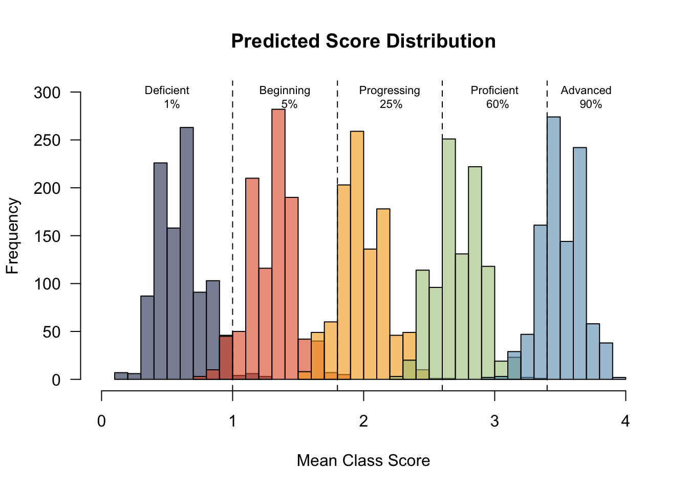

Results and Discussion
Summary statistics
Histograms

Figure 1: Score distributions from the simulated data
Color scheme
| Level | Score Range | Color (HEX) |
|---|---|---|
| Deficient | [0.00 - 1.00) | #29335c |
| Beginning | [1.00 - 1.80) | #e4572e |
| Progressing | [1.80 - 2.60) | #f3a712 |
| Proficient | [2.60 - 3.40) | #a8c686 |
| Advanced | [3.40 - 4.00] | #669bbc |
Figure 2: Color scheme
DISCUSSION POSTING RULES AND GUIDELINES
|
 |